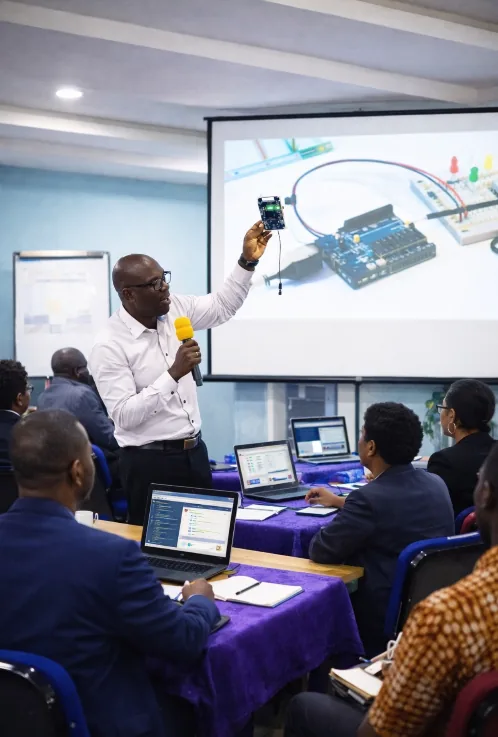

Find and verify information
Frame a question, compare sources, capture citations and identify what still requires human checking.
Corporate training · Port Harcourt and Nigeria
JENECONK delivers hands-on corporate AI training for companies and staff teams in Port Harcourt and across Nigeria. The two-day AI Mastery Intensive combines a skills assessment, guided practice, real-work projects, a capstone and an agreed certification process.
Tell us your team size, priority tasks and preferred dates. We aim to respond within one working day.

Applied learningDirect answer
Corporate AI training teaches employees how to use AI tools responsibly and effectively for specific workplace tasks. JENECONK’s two-day AI Mastery Intensive starts with a needs and skills assessment, gives staff guided practice, and asks participants to apply the methods to work-related projects. The goal is practical capability: knowing when AI can assist, how to check the output and where human approval remains essential.
The training is designed for organisations that want staff to move beyond isolated prompts and understand repeatable workflows. It can be followed by department sessions for HR, finance, HSE, sales, operations and site teams.
What your team practises
Examples are agreed with your organisation. Typical practice areas include:
Frame a question, compare sources, capture citations and identify what still requires human checking.
Structure reports, correspondence, meeting records and presentations, then edit for accuracy and audience.
Summarise or visualise data while checking calculations, definitions and assumptions.
Map tasks where automation may help, define review points and keep a person responsible for approvals.
State the task, background, constraints, desired format and review criteria instead of relying on vague instructions.
Complete a practical project connected to a participant’s role and explain the checks used before sharing it.
Two-day programme outline
Exact timing and examples are confirmed with the client before delivery.
Discuss staff roles, current confidence, priority tasks, devices, approved tools and information-handling boundaries. Shape the programme around these needs instead of assuming every department works the same way.
Learn how generative AI behaves, write useful prompts, research and draft with supporting checks, and review content for errors, tone, privacy and fitness for purpose. Guided exercises cover communication, research and presentations.
Explore appropriate data tasks and workflow design. Participants build or improve a work-related project, explain verification steps and complete an agreed assessment. Certification requirements are stated in the proposal.
Where included in the scope, participants continue with JENECONK tools, resources and a 30-day practice challenge. Management can receive a summary of scores, completed projects and possible workflow improvements.
Designed for accountable use
Training should make employees more capable, not encourage them to accept generated content without review. Participants practise checking claims, calculations, sources, tone and context before reusing an output.
Delivery and pricing
Training is arranged on-site or in Port Harcourt. Discuss other locations or remote requirements with the team.
No fixed public price is shown because scope and delivery requirements vary. Request a written quotation before making a commitment.
Published training evidence
The RCCG Rivers Family case study documents a two-day AI and automation programme for administrators from Regions 33, 5 and 55. It reports 22 evaluations and a 100% recommendation rate among respondents. This is evidence from that specific programme, not a promise of identical results for every corporate group.
Read the documented case studyCommon questions
The AI Mastery Intensive is a two-day programme. Department-focused sessions can be scoped as one day per department after the shared intensive.
The programme can be delivered on-site or in Port Harcourt. Discuss other locations or remote format when requesting a proposal.
Tool requirements are confirmed before the programme. Any paid subscription, licence or third-party cost should be discussed and approved before the engagement.
A programme can include an initial skills assessment, reviewed practical work and a final scored task. Scope and reporting format are agreed before training.
Assessment and certification are part of the programme pathway. The proposal states attendance, assessment and certification requirements for the group.
Fees depend on cohort size, customisation, certification requirements, delivery location, schedule and follow-up support. JENECONK provides a written scope and quotation before booking.
Yes. Sessions can focus on HR, finance, HSE, sales, operations or site teams, using relevant tasks after a shared foundation.
Plan a practical programme
Share your team size, priority work and preferred dates. We will scope a programme and respond with the next step.
Related pathways
Explore JENECONK training programmes, the AI and Prompt Engineering Professional Guide, or Business Suite for structured business-document workflows.
Prepared by Collins Otomewo Anthony · JENECONK Integrated Global Solutions Ltd · Last updated: 28 November 2026. Programme details are subject to a written scope agreed with the client.